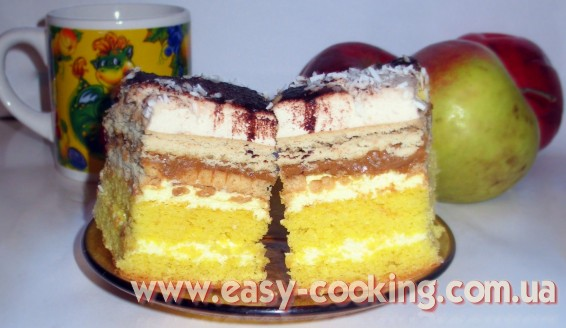

Пляцок “Крувка” (“Корівка”)

Цей пляцок – один з моїх найулюбленіших, які пече моя свекруха. Випічка такого типу (маю на увазі з печивом, вареною згущенкою та суфле) є дуже популярною у Польщі, а ми активно перебираємо досвід сусідів і заодно розширюємо кордони української кухні :).
Що являє собою цей пляцок – бісквіт з кремом, два шари печива з вареною згущенкою між ними та кавове суфле зверху. Перфектний смак, оригінальне поєднання інгредієнтів і дуже смачний пляцок – як результат.
Печиво до цього пляцка ліпше брати тверде: крекер вершковий, “Корівка” чи ще якесь. Печиво “До кави” свекруха радила не брати, бо воно набирає вологу і його стає дуже багато.

Інгредієнти
Бісквіт
- 8 яєць
- 240 г борошна
- 200 г цукру
- 0,5 ч.л. розпушувачу
Крем
- 1 уп. солодкого пудингу
- 1,5 скл. молока
- 300 г масла
Кавове суфле
- 2 ст.л. желатину
- 1,5 скл. молока
- 1 ч.л. розчинної кави
- 2 уп. загущувачу для молока (або упаковка крему, що збивається на молоці)
- близько 200 г печива (краще крекери або якесь тверде, типу “Корівка”)
- 1-1,5 банки вареної згущенки
Приготування
Бісквіт
Приготуйте бісквіт з 8 яєць. Для цього білки збийте на круту піну, поступово додаючи цукор. Тоді додатйе жовтки і злегка вимішайте ложкою. По тому акуратно і поступово всипте просіяне борошно, перемішане з розпушувачем. Можна замінити частину борошна 1-2 ст.л. кокосової стружки, за бажанням. Акуратно вимішайте ложкою.
Тісто викладіть до форми на пергамент і випікайте близько 40 хвилин при температурі 180°-200°С. Як охолоне, розріжте готовий бісквіт на два коржі.
Крем
Зваріть пудинг за інструкцією, але на 1,5 скл. молока, щоб був твердіший. Викладіть його у посудину і залиште вистигнути. Тоді з масла та пудінгової маси приготуйте крем. Для цього спочатку збийте міксером масло, яке має бути кімнатної температури, і до нього по одній ложці додавайте пудингову масу, продовжуючи збивати до утворення однорідної маси. Усілякі есенції, ароматизатори, коньяки – це все вітається і додається за бажанням.
Складаємо пляцок таким чином:
нижня частина бісквіту, тоді половина крему, верхня частина бісквіту, друга половина крему. Зверху викладаємо шар печива, тоді шар вареної згущенки, знову печиво. На печиво викладаємо кавове суфле.
Суфле
Желатин розведіть у 100 г води, а як розбухне, загрійте на плиті. Потрібно, щоб усе добре розчинилося, але не кипіло. Вистудіть желатин до кімнатної температури.
У холодному молоці розчиніть 1 ч.л. розчинної кави, тоді додайте загущувач і збийте. Замість молока із загущувачем можна використати вершки для збивання – думаю, ефект буде той самий, тільки трохи жирніше. І коли та маса буде збита, додайте вистиглий желатин і ще трохи збийте. Але не дуже довго, бо та маса швидко застигає.
Практично одразу потрібно накладати це суфле на верхній шар печива і швиденько рівняти. Боки пляцка можна вирівняти або цією пінкою, або кремом. Присипте зверху за бажанням шоколадом, кокосовою стружкою чи іншою посипкою для краси.
Смачного вам пляцка :).